Как читать авторский курс и нормативные материалы
Это учебные материалы, а не заключение о соответствии конкретного продукта. Организационные модели курса отделяйте от терминов стандарта: ППК в опубликованном проекте — машиночитаемый перечень, а живой реестр его версий является практикой сопровождения. Термин OSA в разных материалах имеет разный охват. Статус и обязательность нормативного документа проверяются отдельно; проект КАПО опубликован как проект первой редакции.
М04. Идентификаторы компонентов и уязвимостей
Зачем этот модуль
Анализатор не «понимает» компонент — он сопоставляет строки-координаты. У компонента это PURL (для экосистемных сканеров) и CPE (для NVD); у уязвимости — CVE, GHSA, идентификаторы OSV и BDU ФСТЭК. Если координата отсутствует или записана неточно, сопоставление просто не происходит — и не как ошибка, а как тишина: findings приходит подозрительно мало. Модуль учит читать, нормализовать и сверять координаты так, чтобы «ноль уязвимостей» означал «их нет», а не «мы не туда смотрели».
Центральный механизм модуля Нет координаты → нет соединения → нет находки. Это не сбой инструмента, а штатное поведение матчинга. Самый опасный результат в SCA — не false positive (его видно), а false negative из-за битого PURL/CPE (его не видно).
Что внутри
- 01 Конспект — два мира матчинга (PURL→OSV, CPE→NVD), разбор log4j, alias-проблема CPE.
- 02 План занятия — тайминг 90 минут: теория, демо матчинга, ПЗ.
- 03 Практическая работа — таблица координат и эксперимент «битый PURL → потеря находок».
- 04 Контрольные вопросы — вопросы и кейсы на чтение и сверку координат.
- 05 Что проверять на проекте — чек-лист аудитора по качеству координат.
Ключевые понятия
PURL · CPE · CVE · GHSA · OSV · BDU · CWE
Карта связей

Соседние модули
- М03. Форматы SBOM — где в SBOM физически лежат
purlиcpe. - М05. Генерация SBOM — кто и насколько точно проставляет координаты.
- М06. Поиск уязвимостей и VDR/VEX — что делать с находками после матчинга (severity, EPSS, KEV — там).
- М09. C/C++ legacy — где координат нет в принципе и alias-проблема бьёт сильнее всего.
Практики
- П24. PURL нормализация и private qualifiers — чистка PURL от приватных qualifiers перед публичным матчингом.
- П25. CPE alias worklist — список C/C++ зависимостей без CPE и их ручная разметка.
Нормативная опора
БДУ ФСТЭК · NIST SP 800-218 SSDF (RV.1 — поиск уязвимостей в компонентах) · CISA Minimum Elements for SBOM · BSI TR-03183-2 v2.1.0 (качество SBOM, в т.ч. полнота идентификаторов)
Практический результат
Таблица PURL/CPE/CVE/GHSA/BDU для OpenSSL, zlib, libcurl и внутренней библиотеки + воспроизведённый эффект «битый PURL → пропавшие находки».